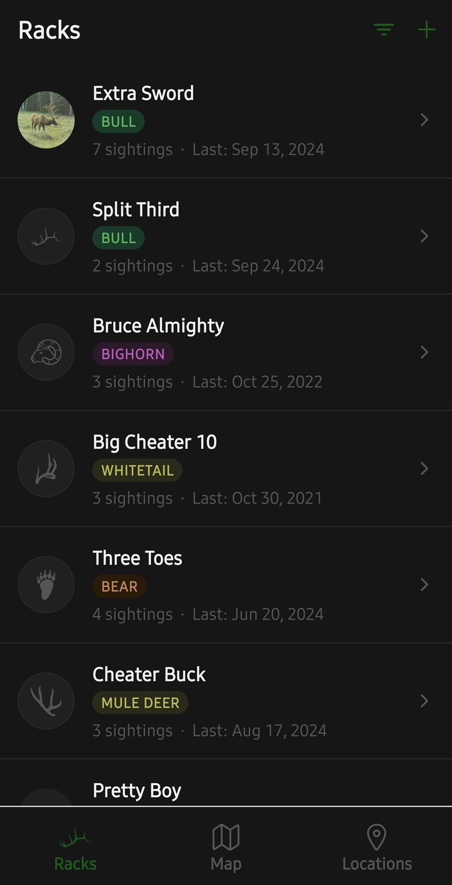
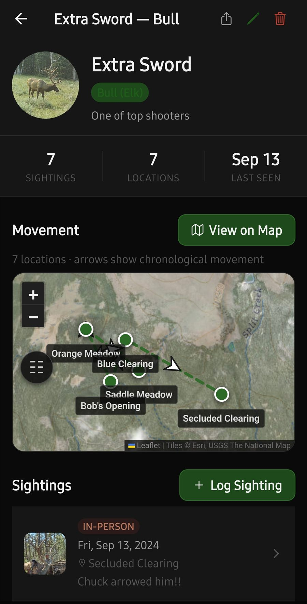
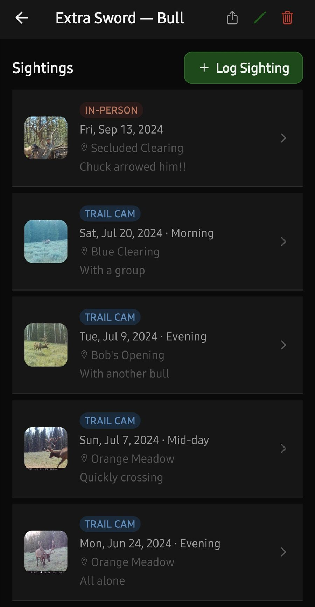
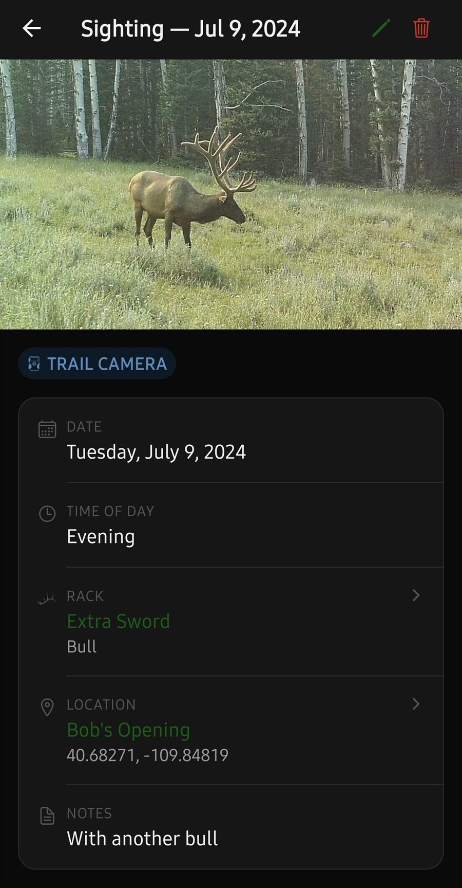
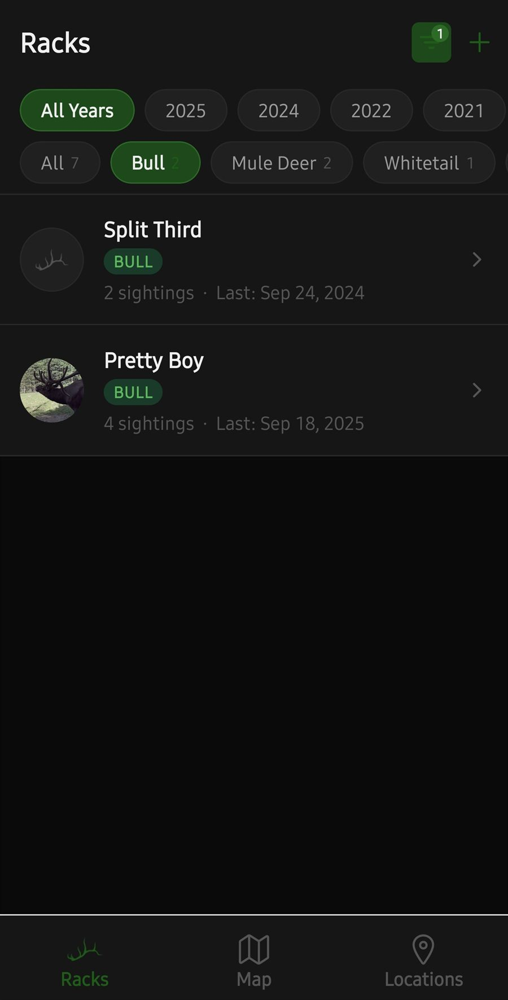
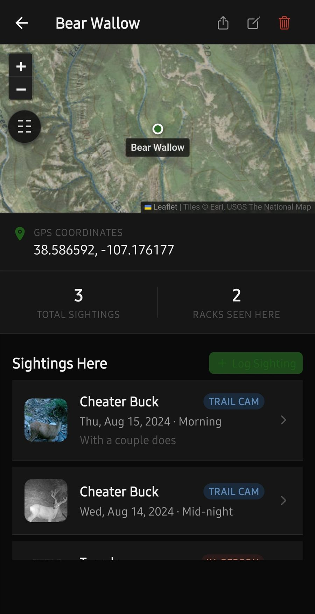
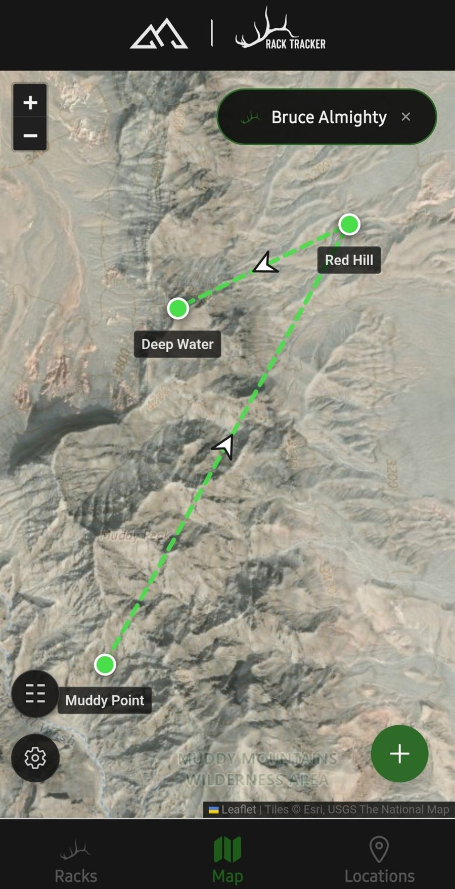
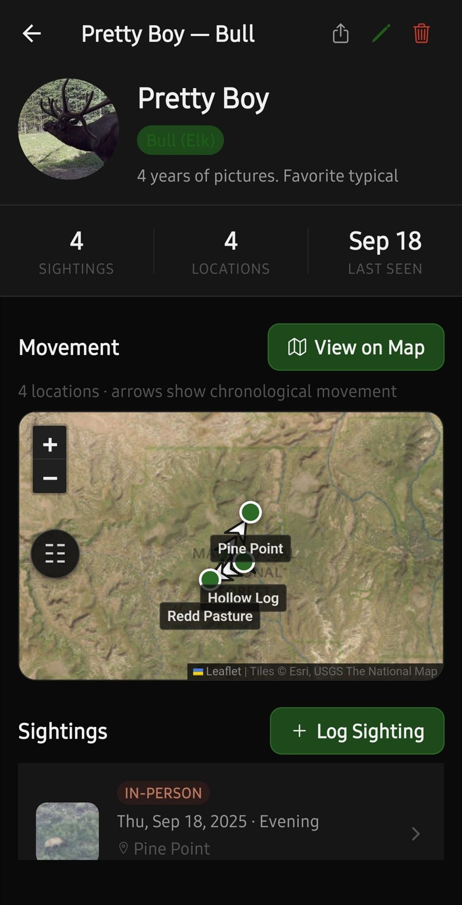
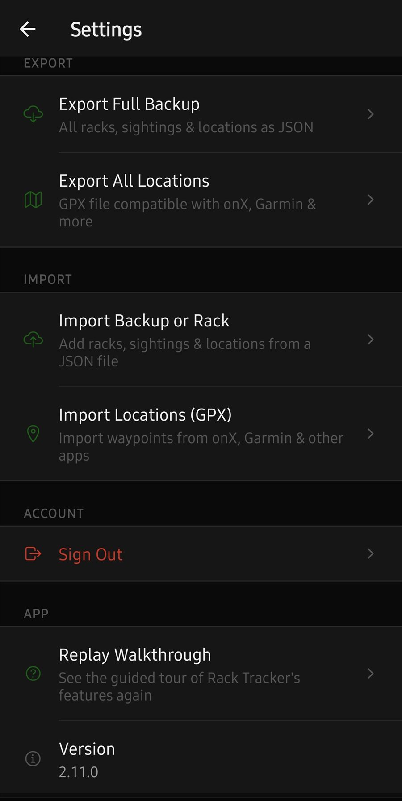
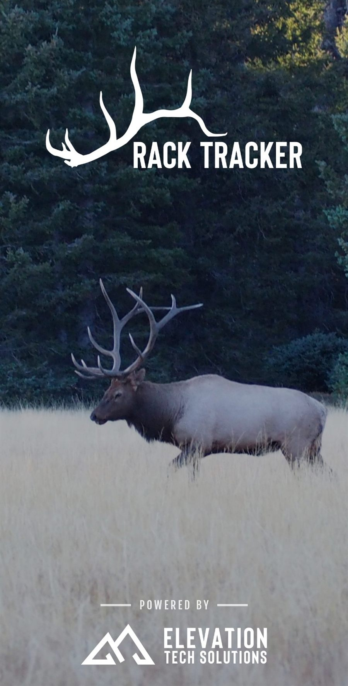

Screens
A look inside









Swipe, drag, or use the arrows to browse.
Stop guessing which bull you're looking at. Track individual animals across every season.
Log every trail-cam hit, glassing session and shed find against the specific animal it belongs to, then watch Rack Tracker draw that rack's movement across the mountain, in order, on satellite and topo maps. Built for elk, mule deer, whitetail, bighorn and bear.
Free to start. No account, no sign-up. Android phones and tablets. $10/year to unlock unlimited racks.

Most hunting apps organize by pin. Rack Tracker organizes by animal, so a season's worth of scattered encounters becomes one readable pattern.
Trail camera, in person, or shed find, with the date, the time of day, a photo, and the spot it happened. Drop the pin on the map or pull it from GPS.
Every sighting belongs to a named animal, so four years of pictures of the same bull live in one profile instead of scattered across a camera roll.
Select a rack and the map connects his sightings in chronological order with directional arrows. Select several and compare their ranges side by side in different colors.









Swipe, drag, or use the arrows to browse.
Satellite imagery, USGS topo, hillshade, and contour overlays with an adjustable opacity slider, the terrain detail you need to read a drainage.
Chronological arrows between a rack's sightings show the direction he traveled, ordered by date and by time of day within that date.
Bulls, mule deer bucks, whitetails, bighorn rams and bears, each with its own badge, icon, and filtering.
Full JSON backups with photos embedded, single-rack files to send a hunting partner, and GPX waypoints for your GPS unit.
Your records live on the device, so logging a sighting works with no signal at all. Recently-viewed map imagery stays cached for offline reference.
No email, no password, no profile. Install it and start logging. Your subscription rides on your Google Play account.
Honey holes are hard-won. We built Rack Tracker so that the people who make it never get to see yours.
No advertising, no analytics, no usage measurement. The app contains no ad or analytics software whatsoever.
GPS is read only when you tap the button to fill in a coordinate. The app never touches your location in the background.
Nothing leaves the device unless you export a file yourself and choose where it goes. That also means a backup is worth keeping.
Drawing a map means asking Esri and USGS for imagery of the area on screen, as every map app does. Your pins are drawn on your device and are never sent to them.
The full detail is in the Rack Tracker Privacy Policy.
Install it, explore the sample data, then start logging your own. No card required to begin.
Unlimited racks, sightings and locations · billed through Google Play · cancel anytime
Free to start, with room for a couple of racks so you can put it through a real season's use before subscribing.
Android only for now. An iOS version is in the works. Questions? Email elevationtechnology@outlook.com
Same shop, same approach. Your data stays yours, and everything works where the signal doesn't.